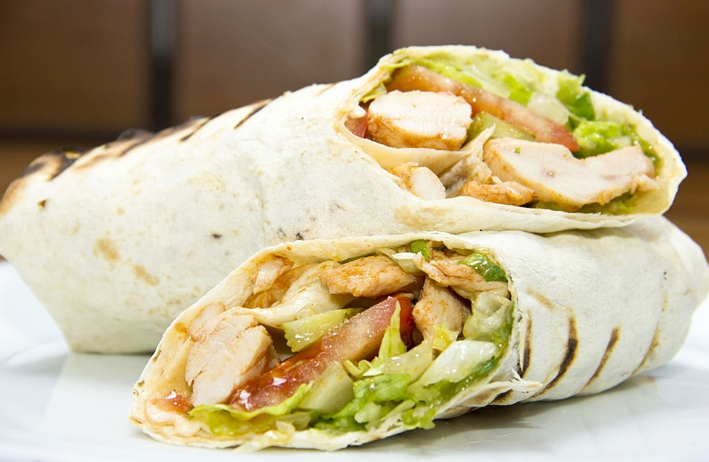
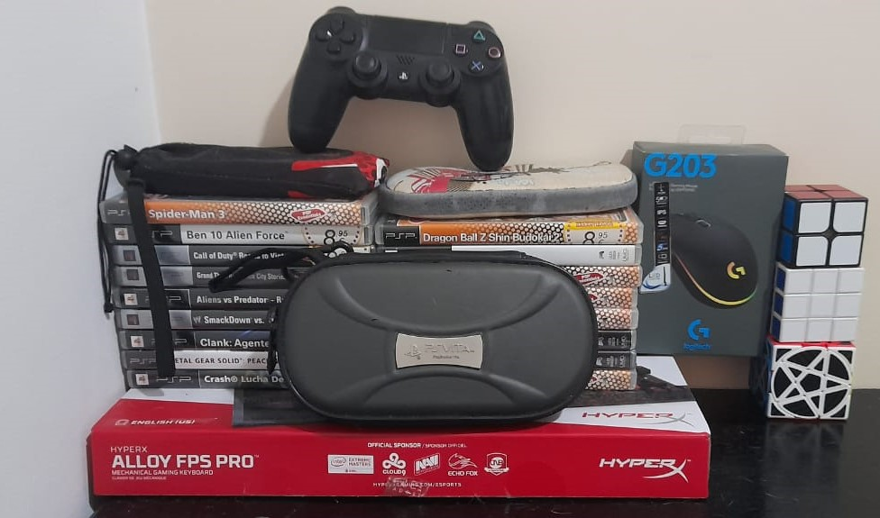
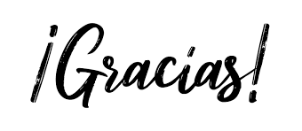

En esta sección te contaré sobre mi, podrás leer sobre mis gustos, disgustos, hobbies , etc. Además, te compartiré algunos de mis logros y metas a corto, mediano y largo plazo
Sobre mi:
Mi nombre es Alejandro Giraldo Herrera, tengo 18 años, soy de Armenia-Quindío y vivo en el barrio La Cecilia 1ra etapa.
Gran parte de mi vida, 12 años exactamente, viví en el barrio Simón Bolivar al sur de Armenia, viviendo allí me gradué de 5to grado en la I.E
Bosques de Pinares sede Pinares, después de esto estudie 6to y 7mo en la I.E Laura Vicuña.
A mediados de 2015 fui de "paseo" a España, donde duré 3 años y complete 7mo y 8vo, volviendo a Colombia a finales del 2017, retomando
y terminando mis estudios en la I.E Bosques de Pinares sede Pinares.

Aunque soy una persona introvertida
disfruto pasar tiempo con las personas que aprecio, me gusta mucho bailar aunque no sea el mejor haciéndolo,
me gusta salir de fiesta y tomarme unos tragos de vez en cuando. Disfruto caminar, preferiblemente solo, mientras escucho música, esto me relaja.
Mis géneros musicales preferidos son:
Metal,
Rock,
Lo-Fi,
EDM y el
Pop,
Rap
y
Trap
en inglés;
Mis comidas favoritas son : arroz con pollo, arroz de 3 carnes, dürüm,
entre otros. No me gusta el pescado(aunque si me gusta el atún) ni el
sancocho. Estas son las comidas que más y menos me gustan, aunque ahora mismo estoy con una secuela del Covid llamada parosmia que transtorna
los sentidos de olfato y gusto, haciendo que todo tenga un sabor desagradable.

Entre mis hobbies se encuentran jugar videojuegos, coleccionar cubos de rubik y navajas mariposas, escuchar musica y caminar o conducir moto.

Mis mayores logros han sido:
- Ganarme un concurso de inglés, con el cual ganaba un viaje a Londrés.
- Uno de mis trabajos de software, mientras hacía el técnico en programación, fué elegido como uno de los mejores del departamento.
- Haber terminado el proyecto MinTIC 2022 ruta 1.
- Graduarme de grado 11 con honores.
- Salir del colegio con una beca del 100%
- Estar cursando este tecnólogo.
Mis metas son:
-
A corto plazo...(-3 años)
- Terminar el tecnólogo actual.
- Terminar el proyecto MinTIC 2022 en el que me necuentro actualmente.
- Hacer uso de la beca que aplazé.
- Terminar al menos 10 cursos de los que tengo planeados.
- Lograr un mejor estado físico.
-
A medio plazo...(3-8 años)
- Termianar mi carrera universitaria como ingeniero de software, ingeniero de sistemas o ingeniero informático.
- Lograr laborar a empresa desarrolladora de software.
- Aprender todo o al menos el 90% de lo que tengo pensado.
-
A largo plazo...(8-... años)
- Lograr tener el rango senior o superior y tener muchos conociminetos.
- Buscar oportunidades laborales en otros paises, por ejemplo, Noruega, Nueva Zelanda o Estados Unidos.
- Al tener estabilidad económica, formar una familia
-
Todo el tiempo...
- Dar todo lo mejor de mi para desempeñarme de la mejor manera posible en lo que haga.
- Ayudar a las demás personas en lo que pueda.
- Ser mejor persona, familiar y amigo.
Con esto termina mi presentación, gracias por haber llegado hasta aquí y espero que te haya entretenido la información, si quieres conocerme más, puedes contactarme por medio de mis redes sociales presentadas en el Menú principal.

© 2021 Alejandro Giraldo Herrera, todos los derechos reservados.